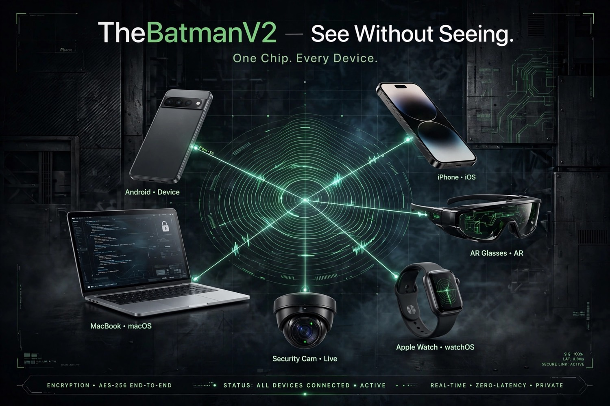
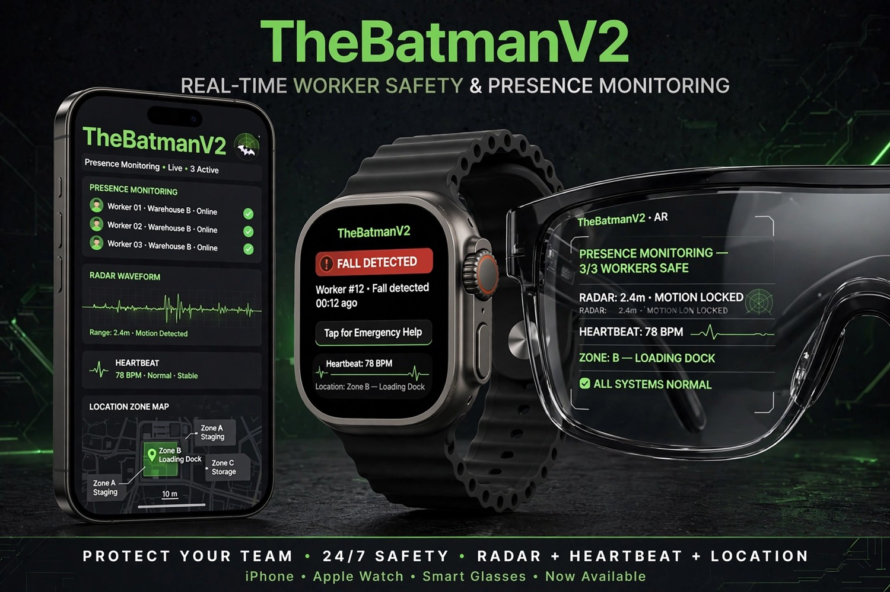
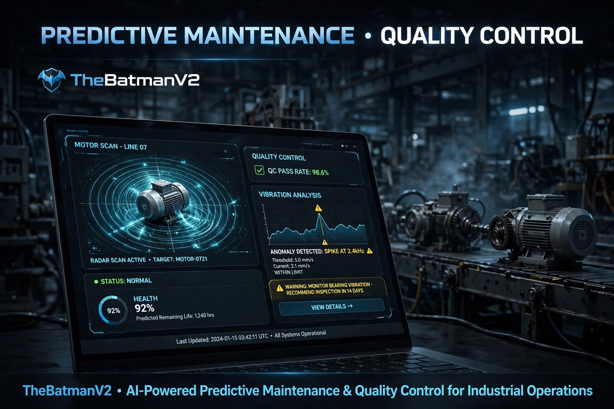
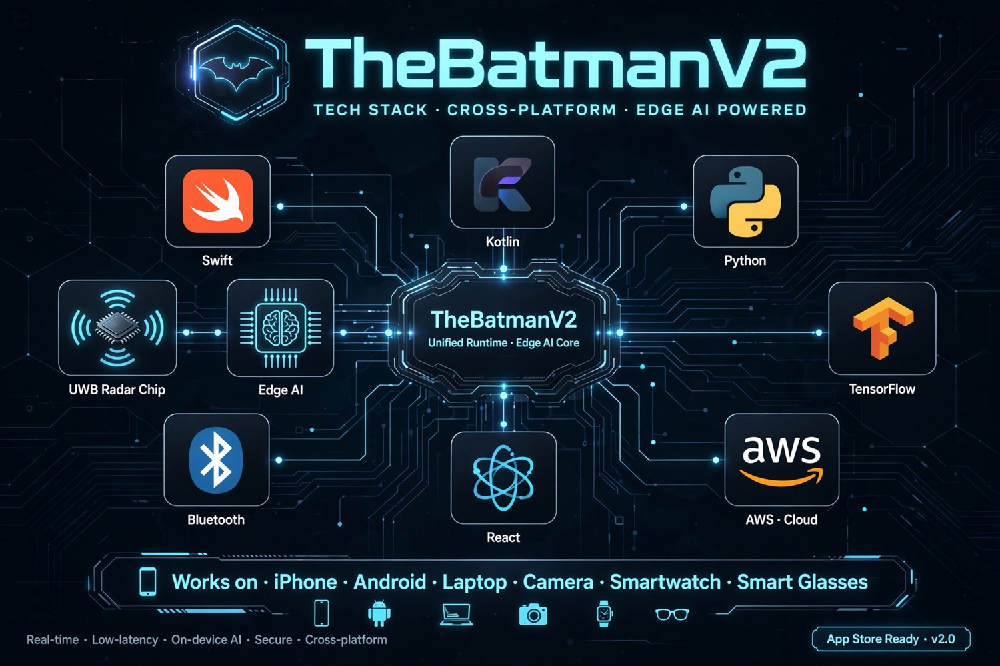
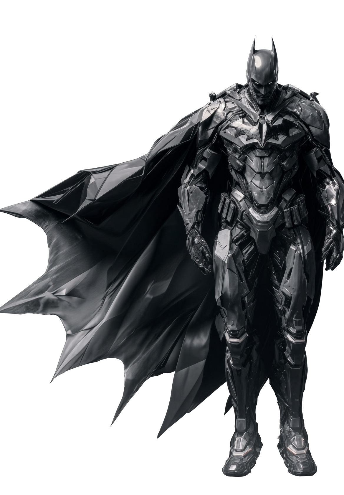
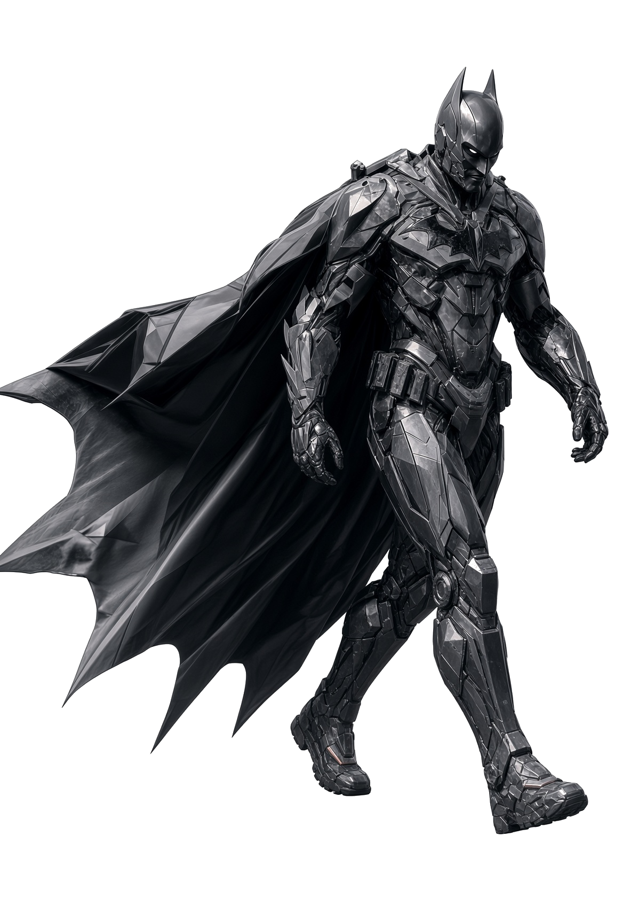
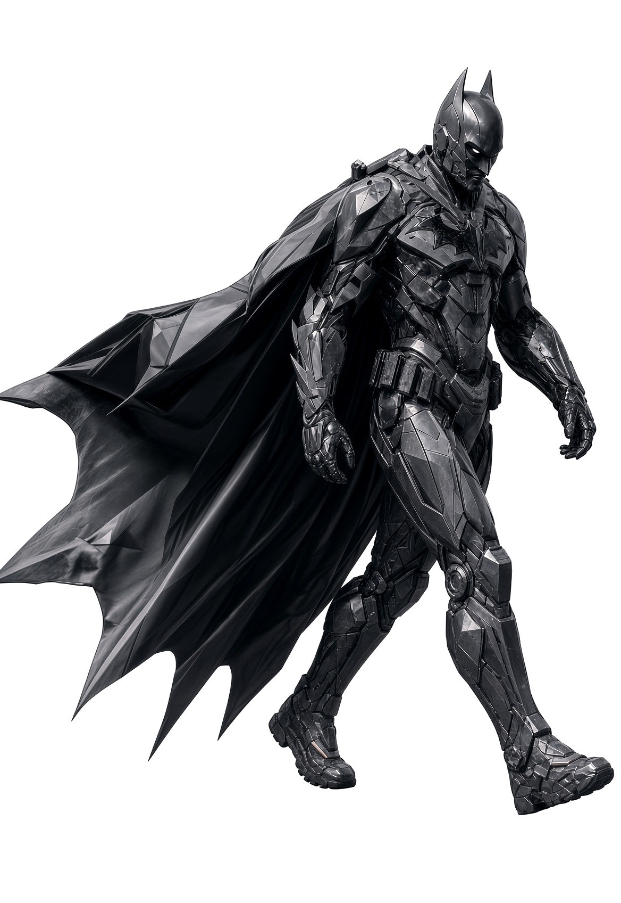

01
Through-Wall Heartbeat
95%+ ECG-class accuracy through wood and brick. Radar-to-ECG translation runs on-device.
Single-channel UWB radar that reads heartbeat through wood and brick, flags arrhythmia, watches machines before they fail, and keeps a factory floor safe — without a camera ever turning on.
Based on a single-channel UWB radar SoC. Presence, vitals, vibration, and zone awareness — no photos, no video, no line of sight required.
95%+ ECG-class accuracy through wood and brick. Radar-to-ECG translation runs on-device.
Chip-level abnormal rhythm detection. LSTM autoencoder flags irregular beats instantly.
Presence + vitals with zero lens. Privacy stays intact because visual data never exists.
Micro-vibration shift detection before a motor fails. Health % and remaining-life estimates.
Instant motion flag + haptic / push alert. Watch, phone, and glasses fire together.
Knows who is inside a high-risk area without ID badges. Virtual boundaries, live presence.
Catches abnormal vibration defects before shipping. Factory dashboard on Mac / Windows.
Micro-Doppler signatures identify presence, then identity class, affect, and zone.
On-device inference for vitals. Cloud is for dashboards — not for your ECG.
MQTT + WebSockets keep iPhone, Android, laptop, watch, glasses, and the edge unit under 120ms.


Presence list, radar waveform, heartbeat, and a live zone map. Falls push to watch and phone in the same beat. Glasses overlay keeps the floor lead heads-up.
Motor scan, remaining life, and vibration spikes at 2.4 kHz before a bearing takes the line down. Quality-control pass rate sits next to the waveform.

Novelda X4M300 / Infineon BGT60TR13C single-channel radar.
C++ / TinyML on FreeRTOS. Edge impulse models for presence and fall.
Heartbeat extraction from micro-Doppler before the vitals model.
Radar-to-ECG translation at 95% accuracy, on-device only.
Arrhythmia and vibration defect detection on the same core.
WebSockets fan-out. TimescaleDB, Postgres, Redis for presence.
SwiftUI, Jetpack Compose, React + Recharts, Spark AR + Unity.
Predictive-maintenance dashboards. No cloud ECG store.

On-device inference only for vitals. AES-256 end-to-end. GDPR / HIPAA compliant mode.
The “camera” unit stores no video. RTSP is disabled.
Heartbeat never leaves the chip as a waveform dump.
Encrypted device mesh. Secure link stays active in the HUD.
GDPR / HIPAA mode for hospitals, plants, and night shifts.


